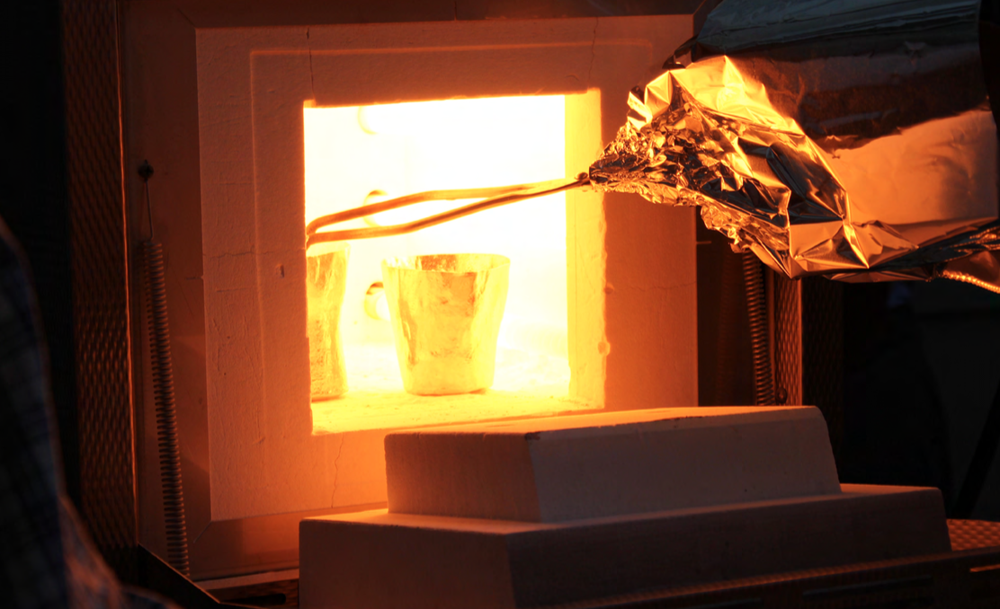
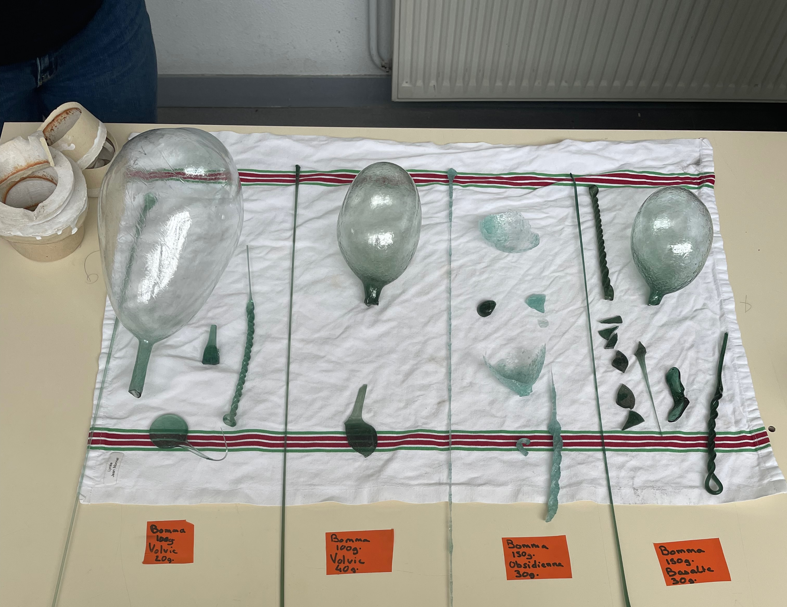

Journées du Verre 2023: Exploration de la viscosité, du traitement du verre et des matières premières innovantes
Les Journées du Verre 2023 ont été dédiées à l'exploration du comportement du verre à haute température, avec un focus particulier sur la viscosité, un paramètre fondamental contrôlant le traitement et la mise en forme du verre. L'événement a réuni des étudiants, des enseignants, des chercheurs et des professionnels du verre pour discuter des relations entre la viscosité, la température et les pratiques de travail du verre, s’appuyant sur des mesures expérimentales réalisées en laboratoire sur la composition du verre utilisée au Lycée Jean Monnet – École Nationale du Verre.
Des mesures expérimentales de température ont été réalisées afin de déterminer les domaines de température de travail du verre et de les comparer aux courbes viscosité–température obtenues lors d’études en laboratoire. Ces travaux visaient à identifier les domaines viscosité–température optimaux nécessaires aux différentes opérations de mise en œuvre du verre, depuis la mise en forme et le façonnage jusqu’aux procédés de finition.
Au-delà de l’étude des conditions de mise en œuvre, les Journées du Verre 2023 ont également ouvert de nouvelles perspectives pour le développement de compositions verrières durables à travers l’exploration de matières premières locales. Des premiers essais ont été réalisés en incorporant des laves volcaniques locales dans des mélanges verriers, afin d’évaluer le potentiel de ces ressources naturelles pour la création de compositions innovantes, tout en étudiant leur influence sur les propriétés du verre et son comportement lors de la mise en œuvre.
Transformer les échanges en opportunités de recherche
Les échanges et les activités collaboratives menés au cours de ces journées se sont révélés particulièrement fructueux, en renforçant les liens entre la recherche, l’enseignement et la pratique verrière. Les discussions et les travaux expérimentaux ont permis d’apporter de nouvelles connaissances sur les relations entre la composition du verre, la viscosité et les conditions de mise en œuvre, et ont contribué à l’émergence de nouvelles orientations de recherche.
Cette dynamique collaborative a finalement conduit au dépôt d’un projet ANR dans le cadre de l’appel à projets « Science avec et pour la société – Ambitions innovantes », avec pour ambition de renforcer les interactions entre scientifiques, enseignants et étudiants autour de l’avenir des matériaux verriers.

Gallery



